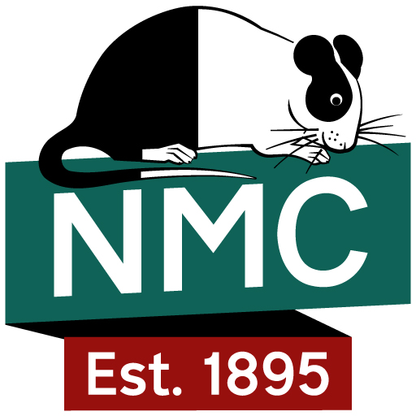
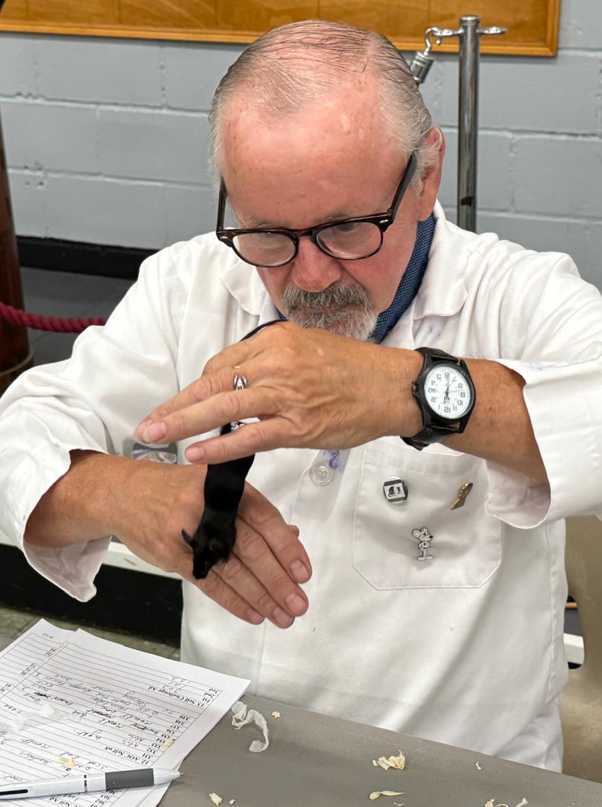
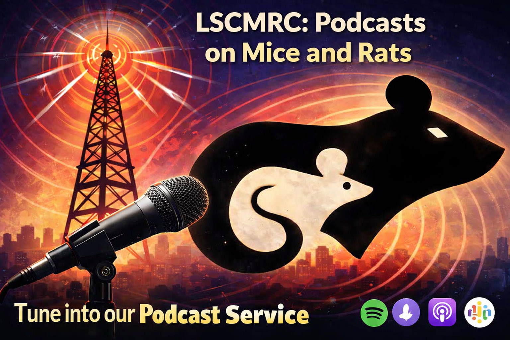
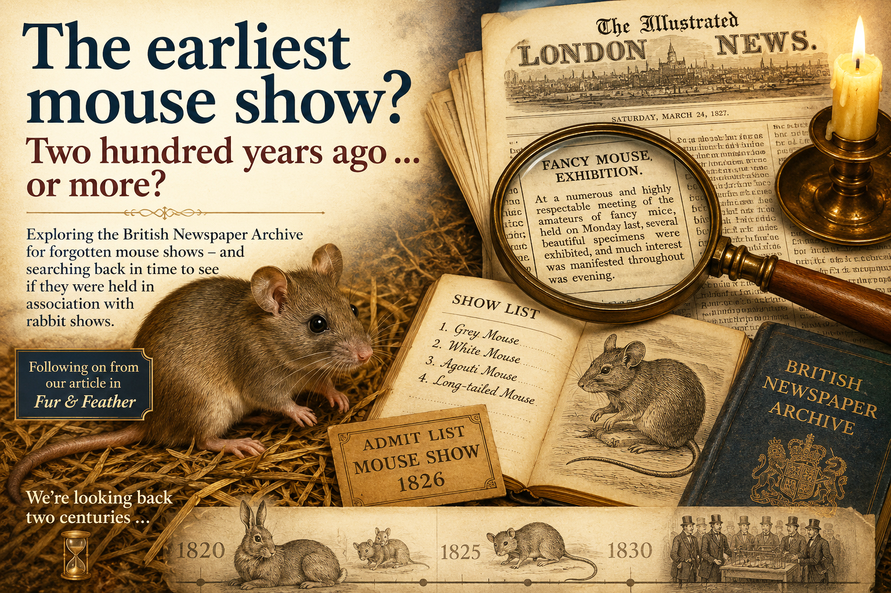
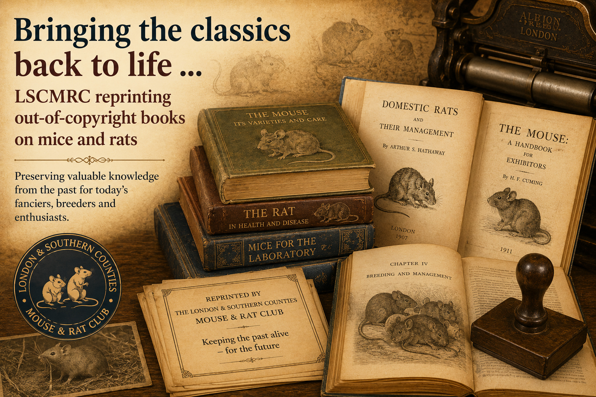
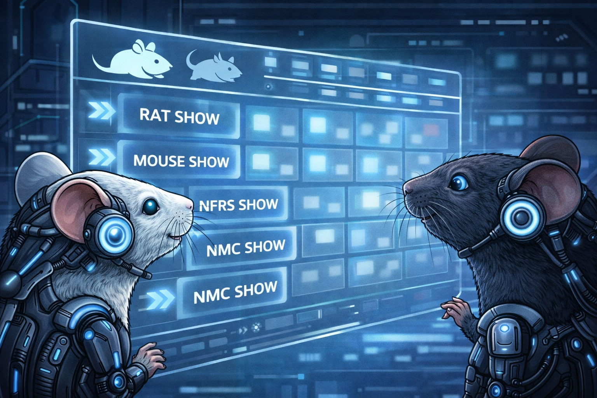

Exhibition Mouse & Rat (EMR) is the monthly newsletter of the London & Southern Counties Mouse & Rat Club (LSCMRC), published for more than 40 years.
This is EMR Update. It is best viewed on a mobile phone. You receive it to keep you, our members, and our friends, updated on club communications, as well as items of interest from other clubs, in the press, and in the wider media.
[Feedback welcome. Some items may be reprinted in EMR.]

Entries for the NMC Annual Cup Show hosted by LSCMRC closed today!
The show is this Saturday 5 September 2026 at our usual venue, the Harlow Sea Cadets' Hall, Bush Fair (rear of Tye Green Bowls Club), Tilegate Road, Harlow CM18 6LU
Parking - council car park, front of the Bowls Club in marked spaces. Free to park on a Saturday BUT ticket must be obtained from machine and displayed. General parking NOT allowed next to the hall - only permitted cars. Email Terry, General Show Manager,tls080951@gmail.com if you consider you have a special need. Please note that whilst the hall is accessible, there are no disabled toilets.
JUDGING FOR RATS AND MICE IS 10.30 am email

Judge Peter Hogg - a picture of concentration.
Winners were:
RESULTS [MICE]
*BIS Willow Stud U Agouti
*BOA Willow Stud AD Argente
*RBIS T Sales U Sable
*BEST SELF Willow Stud U Cream
*BEST TAN I Hayward U Dove Tan
*BEST MKD Willow Stud U Broken
*BEST SATIN Willow Stud U Champagne Satin
*BEST AOV *BIS Willow Stud U Agouti
*BEST JUVENILE L&O Booth U Fawn

Has the Blue Tan ever had a fair deal? Over 60 years ago, in 1964, an u8 Blue Tan won BIS at the Calder Valley Mouse Club Show. Was it controversial? YES! Our new Podcast looks at some of the heated debate of the time and asks Is this win relevant today? Or should the arguments rot in the dustbin of forgotten history? We say that, sadly, the current mouse fancy never gets the exposure to this type of fascinating debate. Somehow it just doesnt work on social media which is more geared to barbed sound-bites, rather than carefully reasoned and intelligent argument among fellow fanciers. So LSCMRC, in another innovation, is experimenting with podcasts to bring history and its protagonists back to life with voice actors, as well as looking out for the fanciers of today to contribute to more podcasts.
You don't need to be professional, just keen to be involved. If you judge then expect to be asked (with your permission) at the end of the show for your overall comments. And don't worry, we will edit out umm's and err's and glitches so you will sound like a pro!
For many years members have quite reasonably asked whether entering large numbers of exhibits gives an advantage over entering just a few — even when those few are of outstanding quality. LSCMRC has therefore been developing an additional, optional system which recognises quality of results rather than quantity of entries. It does not affect judging, placings or existing awards.

When did mouse shows begin? It sounds as though there should be a straight forward answer. The NMC traditionally tells us that the first show with a class for mice was Oxford in 1892 - won by William Wild with a red. Modern accounts generally place the beginnings of the organised rabbit fancy in the early Victorian period, and Fur & Feather gives 1840 as the foundation date of London's Metropolitan Fancy Rabbit Club, the first Lop club. But an AI-assisted archive investigation by Eric Jukes into the early history of the Rabbit Fancy, using the British Newspaper Archive to locate contemporary reports takes the shows further back - before 1826. These findings will be appearing in Fur & Feather and in our next investigation he will research if the Mouse Fancy also extends back in time far further than previously thought.

By November LSCMRC will be offering members a reprint of Nick Mays Fanciful Reflections. Whilst this covers the history of the Rat Fancy, it still covers many names and shows of the Mouse Fancy including Walter Maxey and Mary Douglas (and Eric Jukes!). The book is being reprinted by kind permission of its author, but we will also be exploring reprinting out-of-copyright works that newer fanciers have never seen.

Show dates:
5 September - NMC Annual Cup Show & AGM - No Rats
3 October - Members' Mice & Rats
7 November - Members' Mice & Rats
5 December - Members' Mice & Rats (Annual Cup Show)